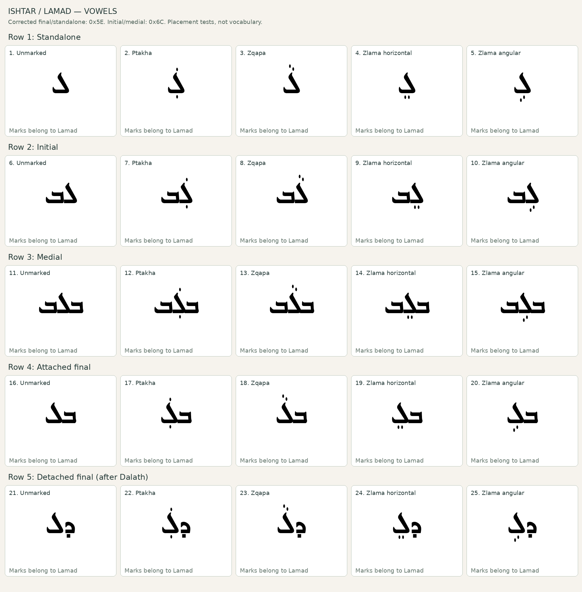
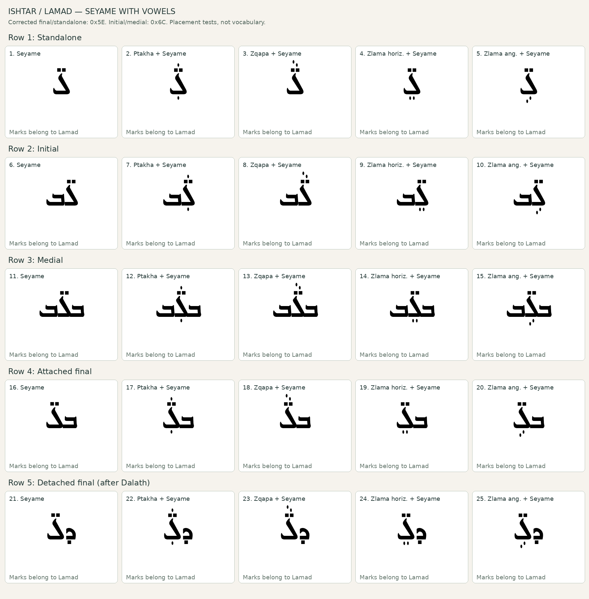
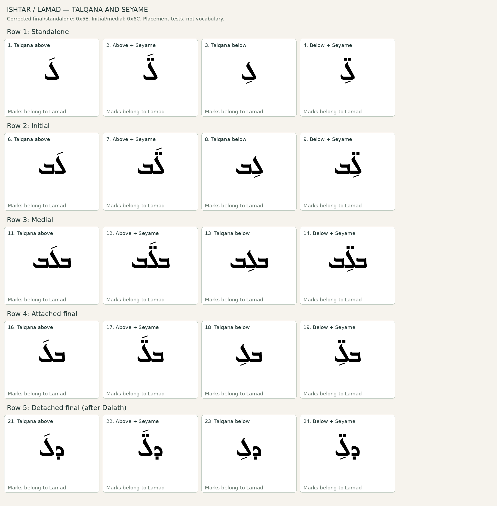

Review mark placement on the corrected final and standalone outline. The Syriac examples demonstrate shapes, not vocabulary. Click a sheet to enlarge it. Please report the sheet and box number.


